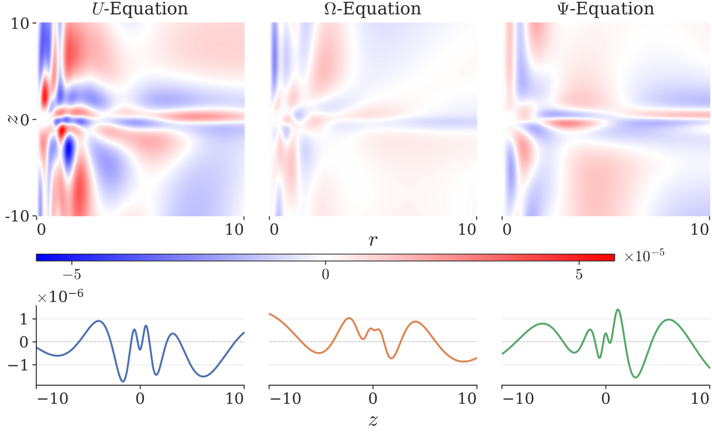
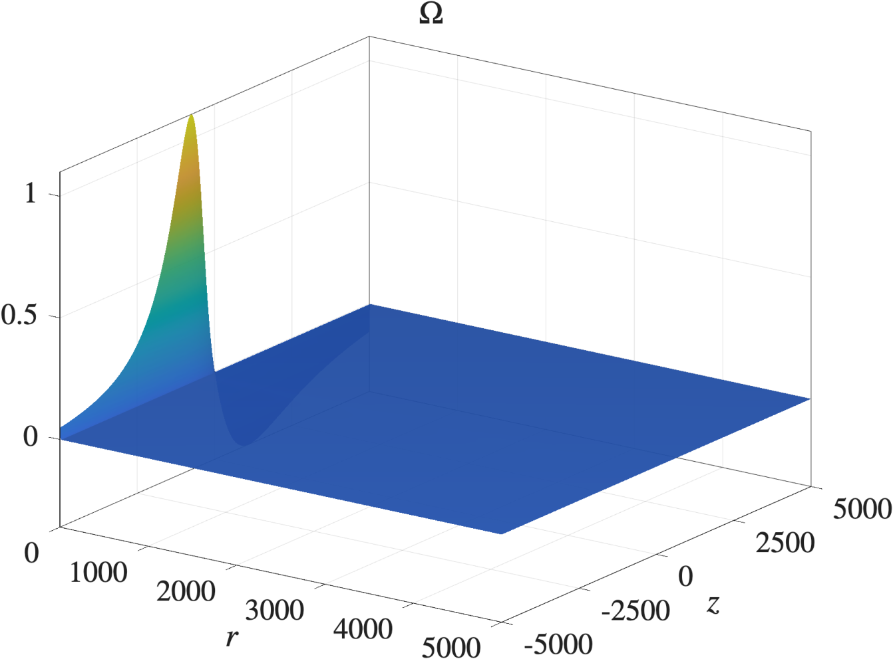

Self-Similar Singularity of the Euler Equations on $\mathbb{R}^3$
Whether the 3D incompressible Euler equations on the unbounded domain R^3 develop a finite-time singularity from smooth data is open. Known blowup results rely on boundaries or non-smooth initial data.
A physics-informed neural network with a self-similar traveling-wave ansatz finds an approximate blowup profile at the critical rate 0.5. Training combines soft and hard constraints, adaptive loss weighting, FP64 arithmetic, boosting, adaptive resampling and curvature-aware optimizers. The profile is converted to splines for certification, and a weighted-energy framework reduces nonlinear stability to a finite set of explicit estimates. Key symbolic derivations are verified in Lean with Mathlib, and Arb interval-arithmetic certificates are replayed in Lean through TorchLean.
A highly accurate approximate profile is obtained, and its transport field is locally outgoing throughout the domain, which suggests linear damping. Low-order damping holds on most of the domain, and high-order damping holds in the problematic off-axis region. The full nonlinear stability proof remains conditional on certifying the remaining constants.

